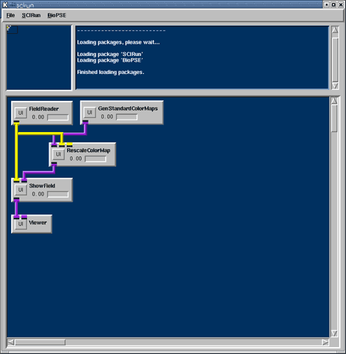
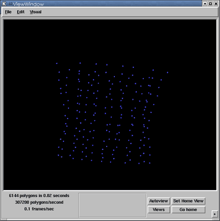
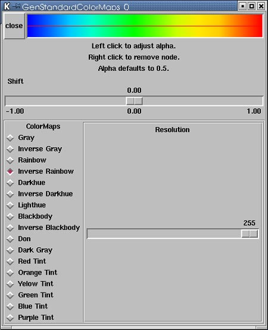
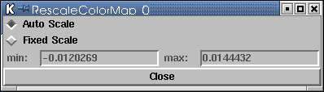
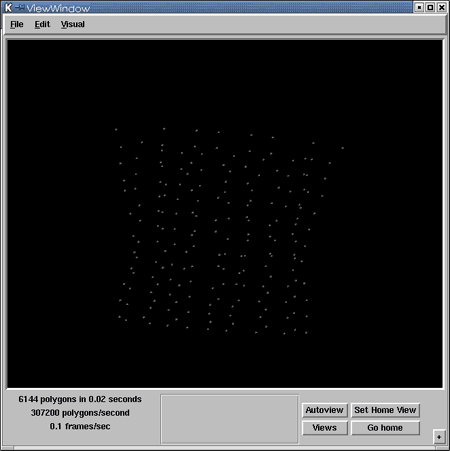
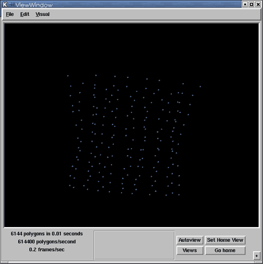

|
Chapter 2: Looking at the Data
Chapter Overview In Chapter 1, we constructed a small network to visualize the geometry of a mesh. In this chapter, we will extend that net, adding tools to look at data values on the geometry. Specifically, we will visualize a scalar quantity (voltage) on a set of points in space (a PointCloud of electrodes). From our previous net, we hooked three modules together--FieldReader, ShowField, and Viewer--as shown in Figure 1.1. On the user interface of the ShowField module, we used the Default Color selector to make all of the geometry render blue. In this chapter, rather than mapping a single color to all of the geometry, we vary the colors over the geometry based on the scalar values in the Field. For a more complete description of how Fields map data values to geometry, click here [link]. Colormaps The datavalues are mapped to the geometric mesh, and we also need to map from datavalue to color. The ColorMap class in SCIRun provides this mapping. The ColorMap also contains a set of evenly spaced colors (RGBA),a minimum and maximum datavalue range to which each color range corresponds. Several example colormaps are shown in Figure 2.1.
The GenStandardColorMaps module generates colormaps in SCIRun. This module contains a selection of default colormaps. For each of the colormaps, the user can control the opacity (also known as alpha) for each datavalue, and can choose the number of discrete entries in the colormap table. The minimum/maximum range of the ColorMap determines what values in the data are assigned what colors. By default the minimum/maximum range is from 0 to 1. Using the RescaleColorMap module, the user can set the min/max values by hand, or can "auto-scale" them to correspond with the min/max datavalue range from a scalar Field. Now we can add a GenStandardColorMaps and a RescaleColorMap module to our net from Chapter 1. Both of these modules are located under the SCIRun/Visualization menu. Connect the output from GenStandardColorMaps to the input of RescaleColorMap, connect the output from the FieldReader to the other input port of RescaleColorMap. Finally, connect the output from RescaleColorMap to the input of ShowField. Your network should now look like Figure 2.2. 
Note that when the connection was created between FieldReader and ResaleColorMap, the ResaleColorMap module added another input Field port. This last "dynamic" port is just like the one in the Viewer module. In this case, if the user connects more than one Field into RescaleColorMap, the min/max range for auto-scaling will correspond to the min/max range of datavalues from all of the input Fields. All that remains for this net to be complete is to read in a Field. Use the FieldReader User Interface (UI) to read in utahtorso-lowres-electrodes.pcd.fld--a point cloud of electrode positions, with voltages measured from a single instant in time. After reading in the data, you should see an image like Figure 2.3 in the ViewWindow. 
Module user interfaces Now we'll explore the User Interfaces for these two modules. Opening the UI for GenStandardColorMaps, you will see a window like Figure 2.4. 
On the left, we have a collection of standard maps we can choose from. At the top, we see the selected ColorMaps, and have a clickable interface for changing the opacity of each color swatch in the map. Under the rendered ColorMap, we have two more interface features: a gamma value for non-linear compression or expandsion of the otherwise-linear color ramp, and a Resolution slider for setting the number of distinct colors that will be stored in the color table. By choosing a low resolution, we can generate "banded" visualizations; by choosing a higher resolution, we can generate smoother color transitions. Figure 2.5 shows the UI to the ResaleColorMap module. 
The user can choose whether to set the min/max range of the ColorMap manually or automatically. As mentioned above, if the range is auto-scaled, it will correspond to the minimum and maximum datavalues from all of the input Fields that connect to the module. By changing the ColorMap, in GenStandardColorMaps, from Inverse Rainbow to Inverse Darkhue, we change the image in the ViewWindow from Figure 2.3 to Figure 2.6. Changing the ColorMap range to a manual setting of -30 to 30, we are able to "clamp" the range of colors, as seen in Figure 2.7. 

The second input port on the ShowField module accepts a
ColorMap. If this port is connected when ShowField executes,
it maps the data values in its input Field to a color in the
input ColorMap, and renders accordingly. If a ColorMap is
present in ShowField the, the module ignores the default
color, and uses ColorMap value. |